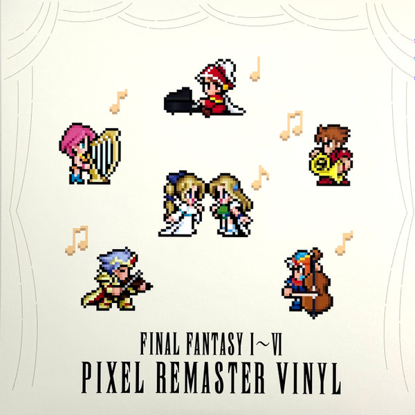

Final Fantasy Remaster
Hironobu Sakaguchi
What the remaster also preserves is the legacy of the series' creator, Hironobu Sakaguchi. He was the director for the first 5 games. Because of the major success of the Series, he was promoted to an executive position, where he took the role of Producer for the sixth game. Despite this change, he still had a major hand in the direction of the game. As the player plays each of the games, they can see what ideas that were decided to permeated the series that ultimately
His influence has spread throughout the company, influencing all other rpg games that were produced by Squaresoft and beyond. The 2026 Game of the Year winner, Clair Obscur by developer Sandfall, praised Sakaguchi's influence on their game.

Nobou Uematsu
When it comes to video game music, there is no one who has made their mark than Nobou Uematsu. The genius of his talent was how he able to compose music with the limited music tones that the 8-bit and 16-bit systems provided. Nonetheless, he was still able to create music for each Final Fantasy game, with enough tracks to release albums of each of the games. Throughout his career he also arranged albums with actual instruments, demonstrating how his music was easily translatable. He was the only composer for the first 9 games, until he requested assistance for the music of Final Fantasy 10. But by then he had already established himself as a world-renowned composer where he was able to conduct concerts overseas of his music.
Due to his influence, he has inspired musicians to play both his music in "bit" form, as well as with real instruments:
You can check out his music on Spotify:

Yoshitaka Amano
Because Enix's Dragon Quest concept and character design was done by DragonBall creator Akira Toriyama, Sakaguchi knew they had to contract their own popular artist would give the game, which they found in Amano. Prior to Final Fantasy, Amano was already well-established artist on his own who had provided the animation to shows and movies. He was contracted by Square for the first Final Fantasy, where he designed the logo and the character design. Because of the success of the franchise, he continued to work on the Final Fantasy logos, which he still continues to do.
Take a look at some of the artwork you'll see in the games: